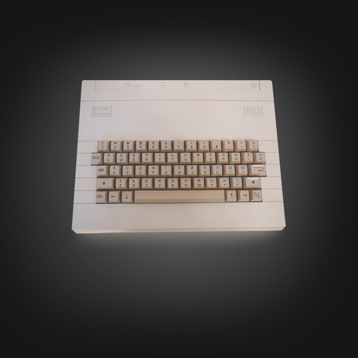

Правец 8Д
Правец 8Д е по-различен, защото е предназначен за домашна употреба (Д = домашен) и не е базиран на архитектурата на Apple II. В малкия корпус е интегрирано захранване и клавиатура. Макар и базиран на същата фамилия процесори като останалите Правец 8 компютри (процесор 6502), Правец 8Д е апаратно и програмно съвместим с компютрите Oric-1 и Oric Atmos, разработени от английската компания Tangerine Computer Systems (по-късно Oric International). Правец 8Д не е съвместим с компютрите Apple II и съответно Правец 82/M/A/E/C/S.
Особености:
Може би най-разпространеният компютър Правец. Използвал се е масово в началото на 90-те години на XX век, както като домашен компютър, така и в училищата. Както при всеки предишен модел на Правец и при този е постигната по-висока интеграция на компонентите. По-голяма част от допълнително използваните преди разширителни платки са вградени на дъното - 80 колонна платка, RS232 интерфейс, флопи-диск контролер, паралелен интерфейс и др. Чиповете за управление на някои от интерфейсите липсват в по-ранните модели (например RS232 и паралелен интерфейс). Както и предишният модел използва българският процесор СМ630 (аналог на 6502), както и схемният набор (чипсет) СМ631. Поради интеграцията на повечето периферни платки на дънната платка при този модел има само 3 слота за разширение. Интересното е че през 1990 г. се сформира Българско-Узбекистанско предприятие - "Вариант", за което започва производство на компютри Правец 8C за нуждите на училищата в Узбекистан. Произведени са компютри с които са оборудвани повече от половината училища (общо около 2500 училища).
Основни характеристики:
| Начало на производството: | Край на производството: | Процесор: | Памет (RAM): | Памет (ROM): | Дискови устройства: | Операционна система: | Разделителна способност: | Цена: |
|---|---|---|---|---|---|---|---|---|
| 1985 г. | 1992 г. | 6502/1Mhz | 48KB | 16KB | Най-популярната конфигурация на компютъра се използва с касетофон, но може да се използва флопи дисково устройство от Правец 8 чрез специален допълнителен контролер, чиято схема и BIOS бяха публикувани в сп. "Компютър за Вас". | BIOS / Oric Basic (версия на MS Basic). | Текстов режим 40x28 (8 цвята), графичен режим 240x200 пиксела (8 цвята) + 3 текстови реда. | 420 лв (1985 г.). |
Особености:
При обявяването на пускането на Правец-8Д във Вечерните новини, като и в медиите е било обяснено, че този тип домашни компютри в бъдеще ще могат да управляват печки, хладилниции, стерео-уредби и др. Интересът към този модел е бил изключително голям, поради ниската си цена в сравнение с другите модели Правец, малкият си размер и мултимедийните си възможности. Правец-8Д е евтин микрокомпютър предназначен за домашна употреба, като позволява лесно възпроизвеждане на звуци и графика, необходими за игрите. Нещо като мултимедийна система за тогавашните стандарти. При запис на касетка може да работи в бърз режим (2400 бита/секунда) или бавен режим (300 бита/секунда). Комплектът не включва монитор, като Правец-8Д е предназначен за свързване към телевизор. Включва програмируем звуков генератор AY-3-8912, позволяващ 3 гласа и 8 октави.
Портове/слотове:
Коаксиален изход за свързване към телевизор, порт за свързване към касетофон, паралелен порт, RGB порт, универсален разширителен порт (за модем, дискови устройства и др.).
Коментари
В БАН работят предимно с крадени технолгии и затова бъгарски учени няма-има български ченгета,които работят с крадени от запада технологии!Цял отдел в ДС е съществувал само за кражба на чужди технологии!
Напиши коментар